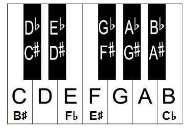

Key signatures
C major C major has no sharps or flats. On the keyboard that is all the white keys. Find all the C's on this guitar fretboard
Notes in C major
- C
- D
- E
- F
- G
- A
- B
- C
Each letter in the scale is associated with a number in that scale. Notice 1 and 8 are the same letters. That's because they are one octave apart (8 is higher).